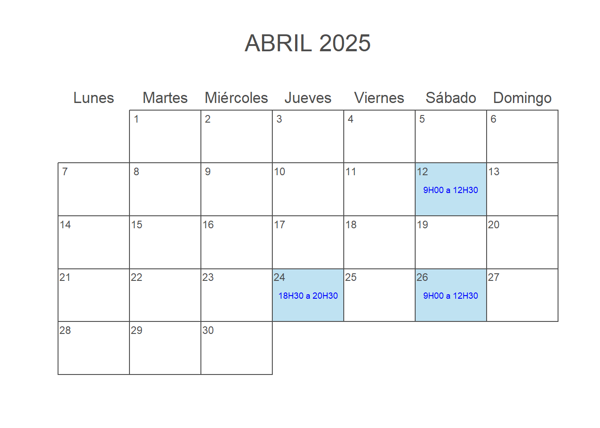
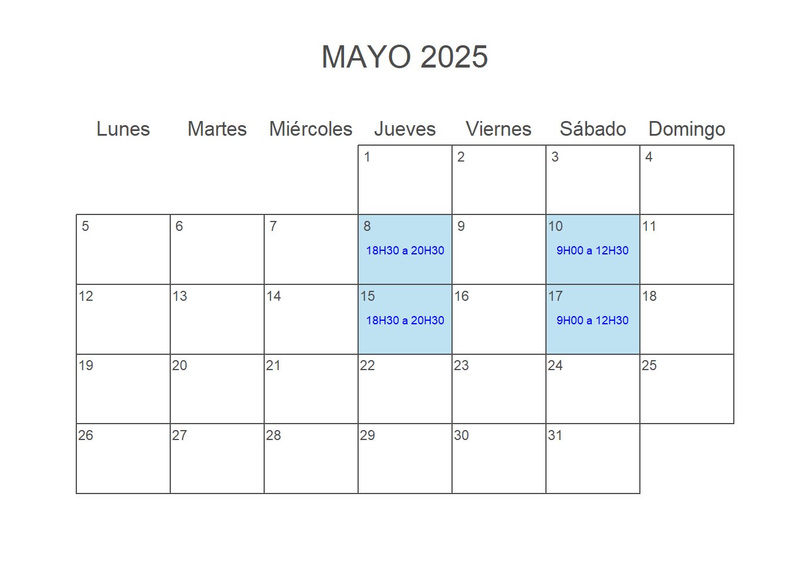
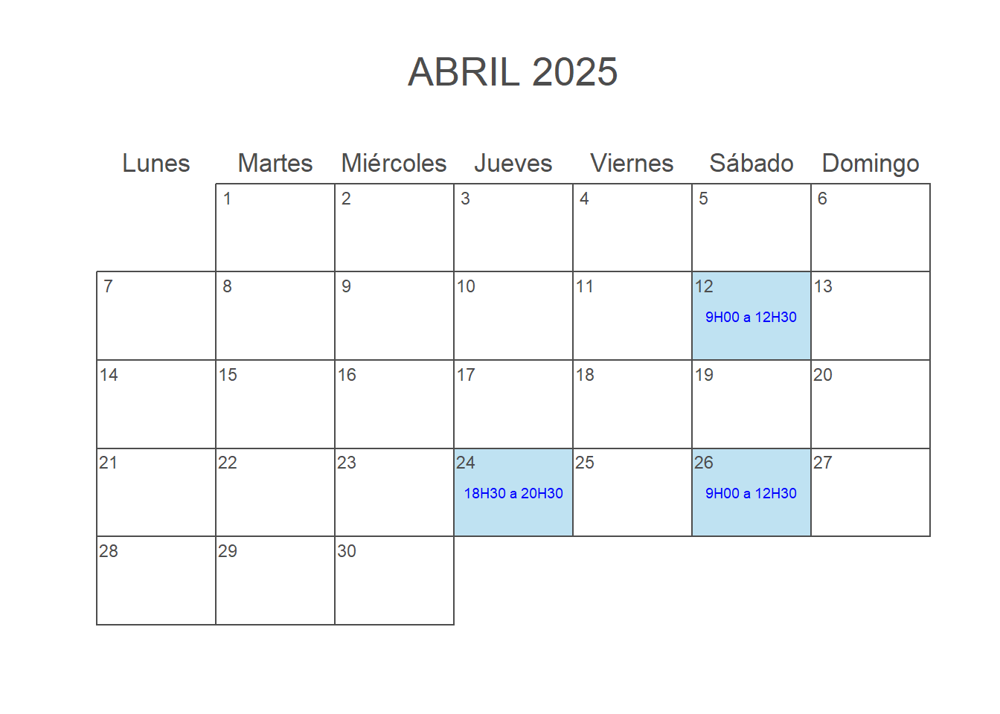
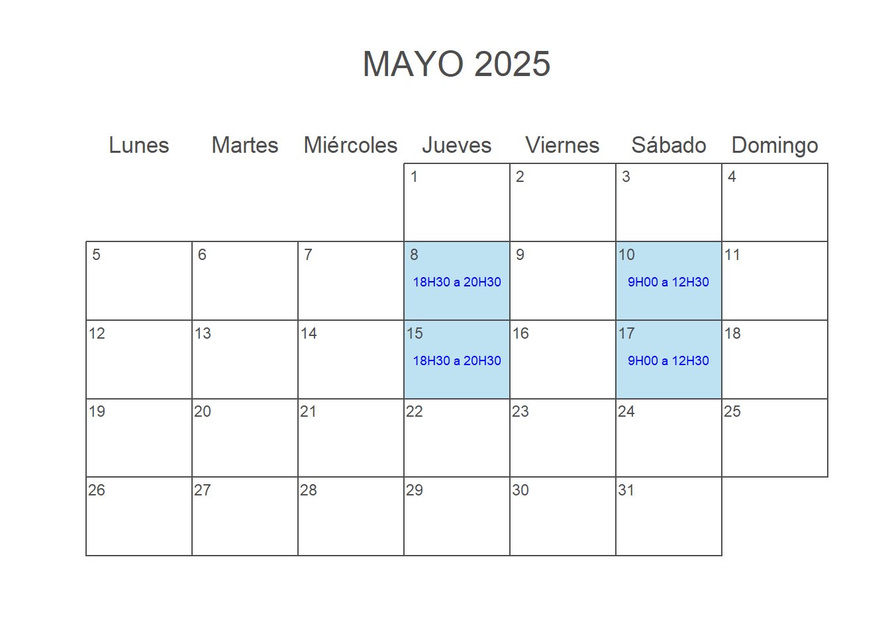

Workshop 2025
El presente curso de estadística tiene cómo propósito el dar un enfoque práctico de metodologías estadísticas comúnmente empleadas en el campo de la biología y la agricultura sin hacer mayor énfasis en teoría y resolución de problemas a mano como usualmente ocurre en el desenvolvimiento de contenidos de cursos tradicionales en estadística. En su lugar, el currículum aquí propuesto busca el dar una visión práctica a sus participantes de cómo los datos pueden ser analizados en base a un orden cronológico dentro de una investigación empezando por la definición de la pregunta objeto de esta, pasando por la decisión del diseño experimental más adecuado y finalizando con su correcto análisis e interpretación de los resultados. En mayor detalle, se abarcan además problemas comunes en el análisis de datos como lo son los análisis exploratorios de carácter formal tales como estadísticos descriptivos, patrones de pérdida de observaciones y visualizaciones; y aquellos de carácter operacional como la preparación y limpieza de datos, buenas prácticas de documentación y programación. Es por ello por lo que se alienta a los participantes a usar sus propios datos a la par de los ejemplos que se pondrán a disposición con el fin de aprovechar el carácter práctico del curso que incluye un comprensivo recorrido en el uso de R, el cual es al momento el lenguaje de programación estadística de mayor predilección en diversas ramas de las ciencias biológicas tanto en la academia como en la industria.
20 horas de clases online en tiempo real, y
20 horas autónomo-prácticas, dando un total de
40 horas
100% Online
Sábados: 12 y 26 de abril, 10 y 17 de mayo de 9H00 a 12H30
Jueves: 24 de abril, 8 y 15 de mayo de 18H30 a 20H30


No hay clases los feriados de Semana Santa y Día del Trabajo.
| Módulo | Contenido |
|---|---|
Módulo 1: Generalidades e Introducción a R Duración: 2 horas |
|
Módulo 2: Proyectos en R y buenas prácticas de programación Duración: 0.5 horas |
|
Módulo 3: Introducción al Duración: 2.5 horas |
|
Módulo 4: Visualización de datos con Duración: 2.5 horas |
|
Módulo 5: Introducción a la Estadística Inferencial con R Duración: 5 horas |
|
Módulo 6: Principios básicos de Diseño de Experimentos Duración: 2.5 horas |
|
Módulo 7: Otros métodos estadísticos comúnmente usados en Biología Duración: 3 horas |
|
Módulo 8: Introducción a la creación de reportes con Quarto Duración: 2 horas |
|
Al término del curso, el estudiante deberá ser capaz de:
Realizar operaciones básicas en R, tales como: cargar, modificar, limpiar y guardar tablas de datos.
Realizar gráficos de manera profesional usando R.
Planificar y decidir que tipo de diseño experimental deberá usar para llevar a cabo un estudio, dependiendo de la hipótesis del mismo.
Llevar a cabo análisis exploratorio de datos.
Llevar a cabo, interpretar y reportar los resultados de metodologías estadísticas tales como: pruebas t, pruebas no paramétricas y análisis de varianza.
Realizar reportes estadísticos básicos en R.
Preguntas durante las sesiones
Consultas dirigidas al instructor al correo electrónico: mmorenozambrano@gmail.com
Mauricio Moreno, PhD
Ingeniero en Biotecnología (Universidad de las Fuerzas Armadas - ESPE), cuenta con un máster en Estadística con mención en Biometría (KU Leuven, Bélgica) y un doctorado en Bioinformática (Jacobs University Bremen, Alemania), posee más de diez años de experiencia en programación estadística en R. Ha trabajado como consultor independiente, profesor, analista de estadísticas ambientales e investigador postdoctoral. Actualmente, ocupa el puesto de Científico Bioestadístico en la función de Soluciones de Campo en Bayer Crop Science, liderando proyectos de investigación y desarrollo incluyendo la migración de procesos estadísticos a la nube y determinación de tamaños de muestra mediante simulaciones Montecarlo basados en cadenas de Markov.